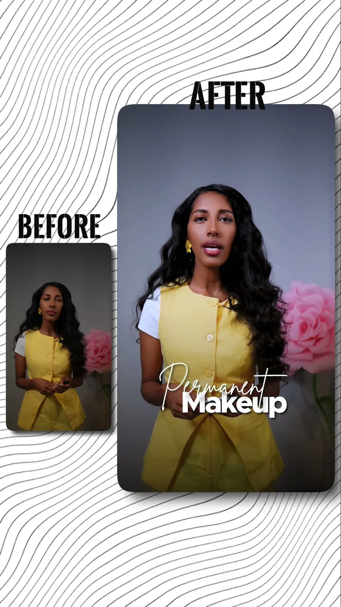
Lion Creatives Creative and Technology Agency
Stories on screen. Systems behind them.
We direct commercial film and photography — and design and build the platforms they run on. Maryland-based, on location and remote.
01 — Event film
A proposal, then a wedding
Lion Creatives was hired to film a surprise proposal on the water. Then, for the same couple, the church ceremony.
4K · TWO SHOOTS · ONE FILM · MARYLAND
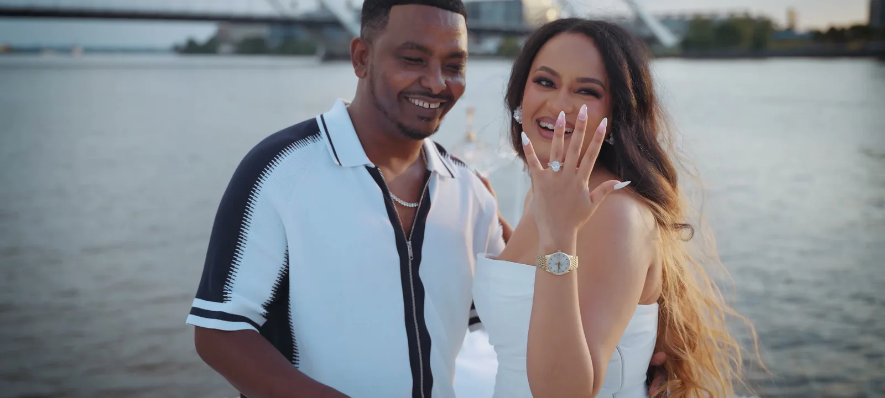
DIRECTED, SHOT AND CUT BY LION CREATIVES
02 — Commissioned work
Ria Brows
Love in Action
Studio social film · 9:16 — a brow artist's career, told as a before and after. Direction, studio shoot, motion titles in English and Amharic.
Sponsorship appeal · 9:16 — a nonprofit working in Ethiopia. Presenter, field footage, bilingual captions, cut to work with the sound off.

03 — Technology
Dunamis Hosting
LAYOUT 1440 PX
/ home
We design and
build the web.
Dunamis Hosting sells six product lines. We designed the product architecture, the navigation across thirteen routes, the pricing and checkout journeys, and the responsive system that carries all of it from 1440 pixels down to 390.
13 ROUTES · 6 PRODUCT LINES · CHECKOUT · CLIENT AREA
dunamishosting.com
Captured · scroll-driven
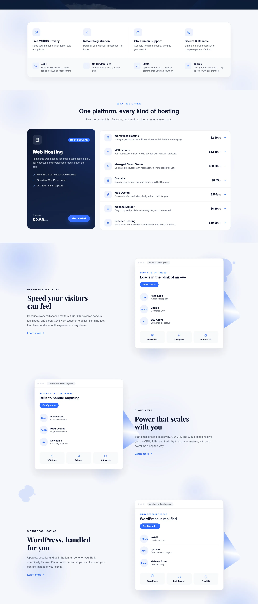
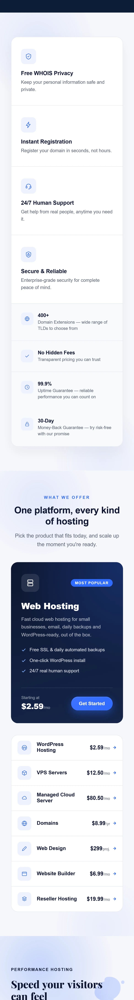
04 — Photography
Commissioned photography.
A styled family celebration, photographed for the client. Eleven frames from one afternoon.
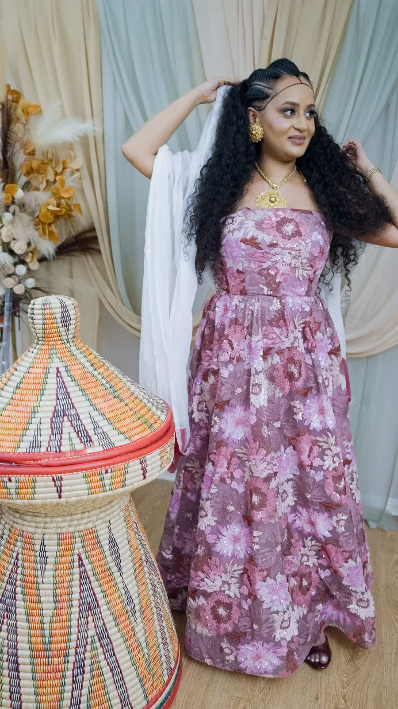
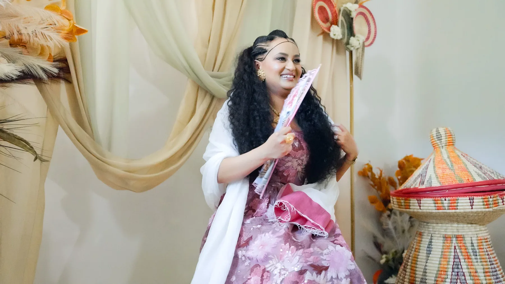
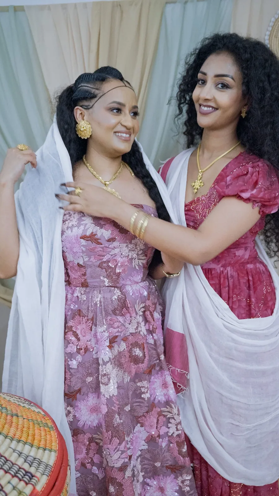
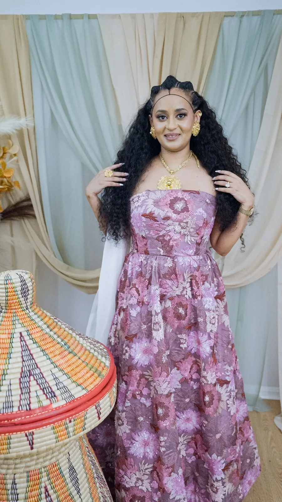
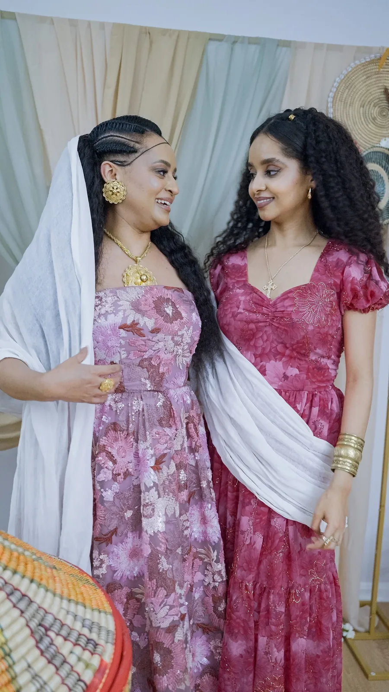
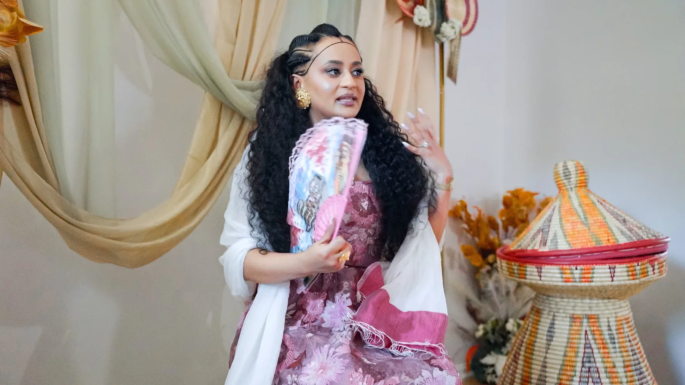
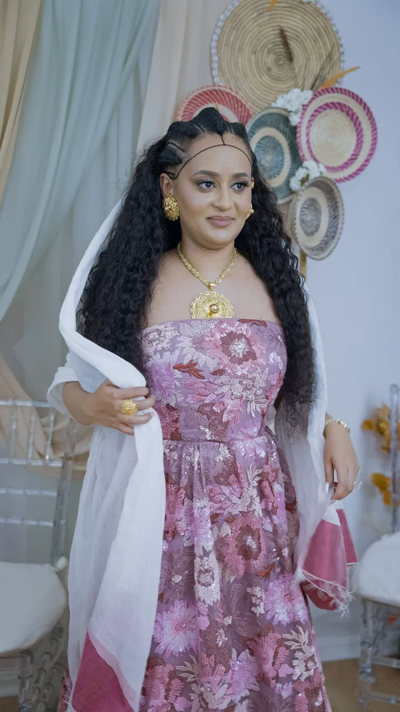
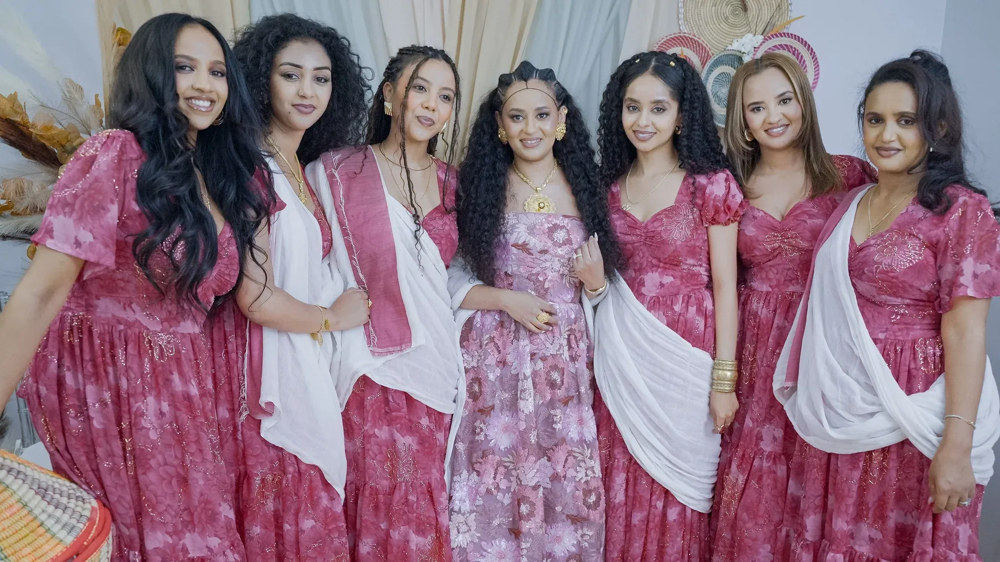
Photography
Portrait, pair and group — one afternoon, one set, eleven frames.
COMMISSIONED · SHOWN WITH PERMISSION
A proposal, then a wedding
EVENT FILM · 4K · A SURPRISE PROPOSAL, THEN THE CHURCH CEREMONY · case study


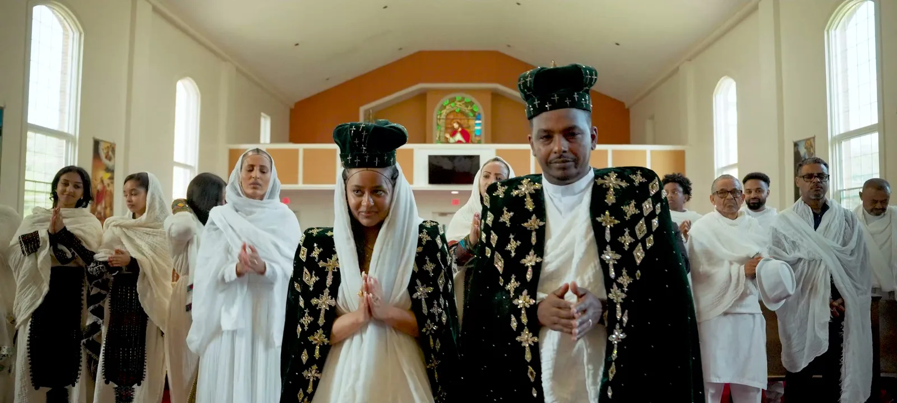

05 — The studio
Who made all of it.
Film, photography, design, engineering and data. Maryland-based, remote and on location.
MARYLAND, USA · REMOTE AND ON LOCATION
- 01Thomas AsfawFounder — Creative Director
- 02Tewodros TeshomeCo-Founder
- 03Bisrat AsfawLead Software Engineer
- 04Gelila AssefaAI & Data Engineer
- 05Michael BekeleGraphics Designer


06 — Start
MARYLAND, USA · REMOTE AND ON LOCATION
You've seen the work. Now tell us about yours.
A film, a photography day, a website — or all three. A short brief is enough, and “not sure yet” is a valid budget.
Direct line
No scheduler connected yet — this opens a request for a time.
Shown on this page
- A proposal, then a weddingEvent film
- Ria BrowsStudio social film
- Love in ActionNonprofit appeal
- Dunamis HostingWeb platform
- Family celebrationPhotography
Directed and built by one team.
Start a project
MARYLAND · REMOTE · ON LOCATION